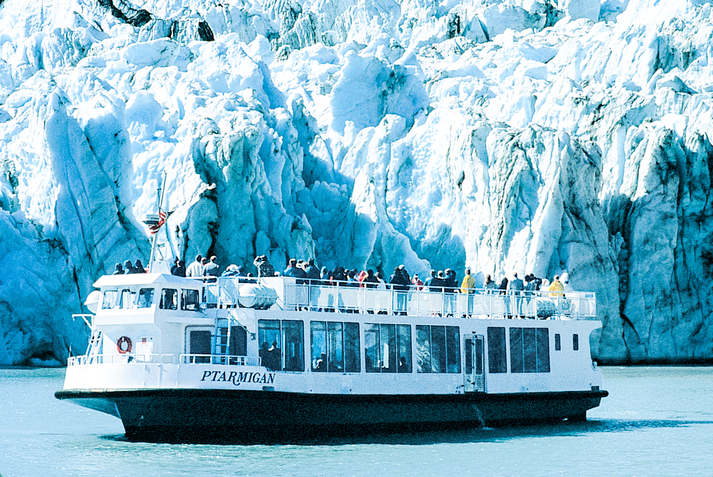
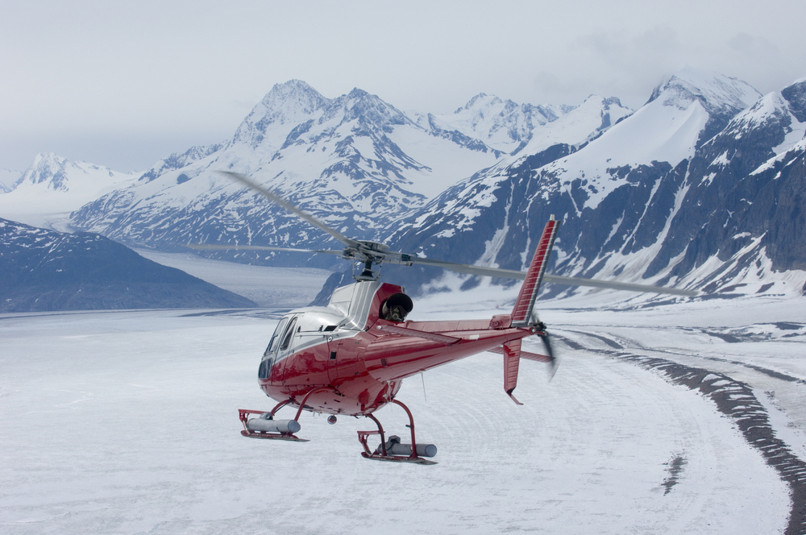

Alaska glaciers are everywhere. Alaska has the nation’s greatest concentration of glaciers; approximately 100,000 of them cover nearly 30,000 square miles. The glaciers near Anchorage are among the most accessible. In fact, there are 60 glaciers within 50 miles of Anchorage. Glaciers have shaped the Anchorage area for thousands of years. Visiting one can be the trip of a lifetime, but that doesn’t mean it is difficult. By boat and plane, on foot, behind a team of dogs and even sitting at a first-class restaurant with views of seven nearby glaciers – Anchorage is your window on Alaska's best glaciers.
 